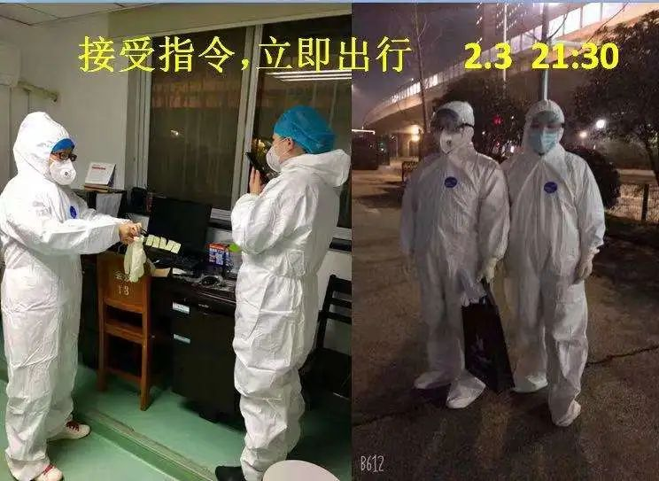

住进方舱医院72小时后，情况明显好转
原文链接 备份链接 武汉紧急改造启用的多个临时性“方舱医院”，承担了此次疫情中数量最大的隔离任务。虽然时间紧任务重，方舱医院的内部运行已经从最初的忙乱走向有序 文 | 《财经》记者 刘以秦 编辑 | 谢丽容 2月6日凌晨3点，在武汉一家 …
澎湃新闻记者 薛莎莎
早上6点多，黄杨娟起床进行房间消毒。7点多，她开始整理所负责隔离点居民的健康数据，随后出门开始一天的工作。
分发居民的一日三餐和生活用品；一早一晚两次查房，统计健康状况；解答微信群中居民提出的问题；组织居民做核酸检测；与街道办、疾控中心、消杀团队对接工作……黄杨娟忙起来，时间总过得很快。
晚上，一切都安定下来，居民们渐入梦乡，黄杨娟开始梳理新冠肺炎病毒核酸双阴（两次检测均是阴性）表格。她忙完所有工作，已是深夜。

黄杨娟在查房，询问居民身体情况，做好登记。 本文图片均由受访者供图
“疫情让我们爆发出平时不敢想象的能量。”黄杨娟是武汉市普仁江岸医院新村街社区卫生服务中心的一名主任，2月29日晚，她忙完工作，才有时间和澎湃新闻（www.thepaper.cn）记者对话。
疫情发生以来，她带领中心30多位员工，逐步开展分诊看诊、提供电话咨询服务、上门家访、给孤寡老人送药、负责隔离点的医疗服务等工作。
在黄杨娟看来，抗疫初期，病人太多，床位太少，工作慌乱无序。随着火神山、雷神山和方舱医院建成，各地医疗队入驻，病人能住院，各方面工作才逐渐步入正轨。已奋战一线近40天的黄杨娟，最大的感触是，见证了这一切：抗疫工作从慌乱到有序，又从有序到进一步优化流程、效率提高。
她期待疫情消散，到那时，她想去武汉东湖公园的绿道上放心呼吸、尽情奔跑。

黄杨娟和同事。
黄杨娟的口述
“想变成‘千手观音’”
“封城”这一天，对我和我的团队而言，是抗疫战打响的第一天。
1月23日，我们被街道办工作人员叫去参加临时召开的紧急会议。会上，我们接到任务：社区医院承担辖区内发热居民的分诊工作。一方面，我们要对发热病人进行分类分流，如果是普通发热病人，就进行常规治疗，如果是疑似新冠肺炎病人，就引导其去定点医院的发热门诊治疗。此外，我们还要成立“电话咨询团队”，为居民提供线上医疗服务。
我们突然被推上一线，压力来了，伴随而来的还有恐慌、焦虑的情绪。
“封城”当天，医院涌进很多病人。我们接诊分诊，忙个不停，不仅如此，我的电话也快被打爆了，我一天接了90多个电话。我一边在门诊忙活着，一边还要接电话，有时实在忙不过来，我旁边的其他医护人员帮我接电话。忙得焦头烂额的时候，我好想把自己变成“千手观音”。
打电话咨询的居民有三类。一类是自己或家人发热，不知道该怎么办。对于这类病人，我会先了解病情，然后引导其来社区医院查血常规，判断是否为疑似感染者。
第二类是已经确诊感染新冠肺炎、但没有医院收治的病人，这也是最让我感到无力的人群。那时，火神山、雷神山、方舱医院都还未建成，病人们在定点发热门诊排队到凌晨都等不来一个床位。
对于这类人群中的轻症患者，我会根据病人的病情，教他们对症用药、居家治疗。对于重症患者，我只能联系卫生部门和街道办工作人员，让他们安排车辆把他们送到定点医院。但卫生部门和街道办也无法一下子“变”出床位来。
第三类是有其他医疗需求的居民，比如，有孤寡老人的药用完了，但年纪太大无法出门；有老人尿管脱落。对于这类情况，我们会安排医护人员上门服务。

黄杨娟和同事。
我记得很清楚，有一位居民连着四天给我打电话，说她丈夫已经确诊，跑遍武汉市所有定点医院，都没有床位，她一边说一边哭，哭得我实在心酸。
我们也遇到一些“撒泼打滚”的家属。有一次，一位家属把妻子带到社区医院，坐在地上，对着医护人员骂骂咧咧。我听了大致情况，原来是他妻子已基本确诊，但无医院收治，没办法了想来我们这里输液。按照规定，这类病人要到定点医院治疗，如果我收了他妻子，随时有感染医护人员和周边居民的风险。
这位家属坐在医院门口，挡住其他病人就诊的通道。我好说歹说，给他们讲解武汉现行的相关政策，提醒他所戴的口罩防护不够，送了他几只口罩，引导他去定点医院。最后，我把手机号码留给他。最终，他被我成功劝导。
病人和家属都是通情理的，他们只是太无助，我理解他们。那段时间，我总是尽力多方打听、及时关注最新的定点医院名单，关注火神山、雷神山医院开放时间，好及时通知他们。
抗疫初期，病人太多，床位太少，那段时间可以称得上是“兵荒马乱”，回想起来不禁觉得可怕。
医院里，除了怀孕、年纪大的医护人员，其他的员工都取消休假回来工作，但我们依然处于连轴转的状态。医护人员身体上的累都不算什么，一开始的心累、心酸又无助，才最困扰我们。
当时，我一直盼着在建的医院快点建起来。火神山医院开放时，我看到转运病人的视频，瞬间热泪盈眶，我太感动了，心想着许多病人终于能住上院了！
“病人能住院，也就安心了”
这次疫情，对武汉来说，可谓是“大考”。为了打好抗疫战，官方开始建医院、设床位。各地的援助医疗队也一批一批进驻武汉各医院。
观察密切接触者，阻断潜在传染源，也是抗疫工作中的关键一环。武汉实行“四包一”政策，由一位民警、一位网格员、一位社区工作者、一位社区医院工作者组成“家访队”，对密切接触者上门家访，询问健康状况，并且登记成表。
那时，社区医院的防护装备很紧缺。有时，在没有防护装备的情况下，我戴上两层口罩，穿上白大褂，就和其他工作人员上门家访了。一次，我家访完回到医院，院长吓了一跳说，“没有防护服都敢去家访，感染了可怎么办？”
说实话，我想不了那么多，我是医生，这是职责所在，我也是主任，任务来了，难道能不做吗？其实我也害怕，但是没办法，疫情那么严重，就是害怕也要上。
疫情让我们都爆发出了以前不敢想象的能量。团队里年轻医生和小护士们，也都很勇敢，工作起来没有任何怨言。
好在，抗疫战打响没多久，我就明显感觉到情况好转了。
自1月27日，我接到的居民咨询来电就开始减少，从一天90多个，减到50多个，再减到20多个。
工作中，我和同事常常总结，把工作逐渐流程化、区块化。
我们在分诊台设置“三道坎”。第一道是健康门诊的宣教和筛查，医护人员把肺部有感染、核酸检测阳性、高度疑似病人筛查出来，交由街道办人员带至定点医院治疗。第二道是对于轻症暂未确诊的病人，我们引导其到指定的社区医院留观。第三道是没有做过任何检查的人群，可先在我们这里做血常规检查，再根据血常规指标及症状做进一步处理，要么转到发热门诊，要么进行药物治疗。
这样划分区块后，我们逐渐把工作理顺，操作起来也井井有条，医护人员的心也安定下来了。
伴随着火神山、雷神山以及多所方舱医院的建成和开放，在“应收尽收、应治尽治”和“分类管制”统一要求下，武汉市大部分确诊病人、疑似病人以及密切接触者，都来到相应的医院和安置点，接受卫生医疗服务。
各地援助医疗队也纷纷到位，投入救治工作。
床位增多、医护人员就位，“人等床”的情况大大缓解，病人能住院，也就安心了。
“工作理顺了”
随着病人逐步转到各大医院治疗，社区医院的工作慢慢减少。
卫生部门设立多个密切接触者隔离点，我们社区医院定点驻扎在其中一个隔离点，为隔离的居民提供医疗服务。
2月7日，我们来到隔离点开始工作。

黄杨娟和同事在隔离点工作。
最初，这里并非是“密切接触者隔离点”，而是一个确诊病人的“中转站”。那时，因方舱医院床位基本处于饱和状态，所以少部分暂时没住进方舱医院的确诊病人，先在这里暂住，等方舱医院腾出床位，再转过去。
第一天，我们就接到8名确诊病人。直接接触确诊病人，我们工作上必须十分谨慎。
为了服务好居民的同时，又最大可能的减少交叉感染，我们建了医护人员和居民们的微信交流群。居民们有生活和医疗需求，可随时在群里提出，我们及时解决。
随着方舱医院治愈出院患者越来越多，我们这里的确诊患者没几天就全部转进方舱医院了。接下来，我们又陆续接待了一些疑似患者。
每天早上，我6点多就起床，把自己房间全面消毒后，出门开始一天的工作。先安排人员把隔离点的上上下下进行消毒，安排发放早餐，一一查房收集居民们的体温和身体状况，登记成表，接着在微信群里关注居民们的生活和医疗需求，并及时解决。
同时，我们还要密切关注几名病情稍重病人的身体变化。

微信群里，黄杨娟和团队的工作得到居民的肯定和感谢。
分发午餐后，我们开始梳理下午需要做核酸检测的居民名单，并及时通知他们，做好安排。提前与疾控中心采样人员对接，保证“无缝衔接”，不耽误时间。随后，我们向卫生部门、信访部门上报隔离点各类信息，并接受检查。
工作虽然有条不紊，但近期工作中有一个问题一直困扰着我。我们隔离点统计的双阴名单常和疾控中心统计的不一致，我们统计的人数常会多出几人。
在接受工作检查时，我们向疾控中心反映了这一问题。随后，疾控中心立即召开会议查找数据偏差问题所在。原来疾控中心在对病人的统计中，疏漏了病人此前在医院所做的核酸检测，导致“双阴”居民的数量少。
找到问题后，疾控中心的工作人员立即调整工作方案，决定只要居民能拿出纸质版核酸检测阴性的报告，结合其在隔离点所做的检测，两次均是阴性后，即可到定点医院做复查，评估其是否能解除隔离。
如此一来，这方面工作就理顺了，也缩短了居民解除隔离的时间，能腾出更多床位。
工作的流程优化、效率提高，还体现在消杀工作方面。此前，江岸区32家隔离点只要有居民解除隔离，就随时需要专业的消杀团队上门消毒。这就导致消杀团队多走很多冤枉路，也耽误时间。后来，我们一起商量决定，每天定时上报一天要消毒的房间数量，消杀团队收集好信息，规划最佳的出行方案，这样就大大提高了工作效率。
抗疫到现在，已经一个多月。这一个多月以来，抗疫工作从无序到有序，从有序到日益优化。
今天回顾了这段时间的工作，突然很怀念以前在东湖公园踏青的时光。等到春暖花开，疫情消散的时候，我想和家人、同事一起去东湖绿道，不戴口罩，放心呼吸、尽情奔跑。
戳这里进入
“全国新型冠状病毒感染病例实时地图”↓↓↓
本期编辑 周玉华
推荐阅读


原文链接 备份链接 武汉紧急改造启用的多个临时性“方舱医院”，承担了此次疫情中数量最大的隔离任务。虽然时间紧任务重，方舱医院的内部运行已经从最初的忙乱走向有序 文 | 《财经》记者 刘以秦 编辑 | 谢丽容 2月6日凌晨3点，在武汉一家 …
原文链接 备份链接 武汉封城之初遇上医疗挤兑，“居家隔离”政策随之推出。但社区资源和能力未匹配，反而加重家庭内部交叉传染。这是武汉病例此后暴增的主要原因。 纠错政策姗姗来迟，10天后的2月2日，“居家隔离”变为“集中隔离”。但初期隔离 …
原文链接 备份链接 【财新网】（记者 萧辉 包志明 实习记者 陈丽金）黄晓波是四川省人民医院重症医学科（ICU）主任，此次四川援鄂医疗队副队长。2020年1月25日，大年初一，黄晓波抵达武汉，对口支援武汉第二批收治新冠肺炎病人的定点医院 …
原文链接 备份链接 【财新网】（记者 周泰来 实习记者 黄晏浩 陈丽金）湖北省鄂州市由于新冠疫情防控压力大，已公开呼吁全市退休、离职医护人员和个体医务工作者积极参与疫情防控工作。据鄂州市政府官网，鄂州市新型冠状病毒感染的肺炎防控指挥部 …
原文链接 备份链接 经济观察网 见习记者 陈月芹 1月29日凌晨3点，家住武汉硚口的李馨（应受访者要求，李馨为化名）在微博、知乎等社区平台上求助：“我不知道怎么样才能排到一个珍贵的床位，为什么明明说好接收所有疑似病人，现实却是辗转求医，没 …